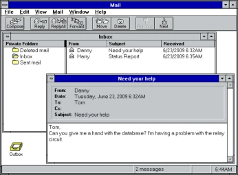
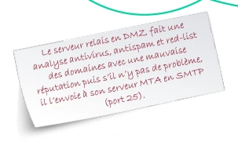

Module 01 — Les composantes du Cloud et de Microsoft 365¶
La transcription du support Drive et l’aide pédagogique sont séparées pour rendre leur provenance explicite.
SOURCE DRIVE · TRANSCRIPTION DU SUPPORT
Le contenu des documents du dossier TSSR est transcrit ci-dessous, page par page. Les textes et tableaux sont intégrés à la page Web. Aucun fichier PDF, aucune diapositive entière ni aucune reproduction de page n’est affiché. Seuls des croquis ou visuels isolés et vérifiés peuvent accompagner la transcription. Les versions et les consignes restent celles des supports de formation. Les compléments IA sont conservés dans leur onglet distinct.
Support · Module 01 - Support de cours · 32 pages transcrites
Transcription du document source. Les parcours et libellés historiques sont conservés. Les mots de passe, codes de validation et coordonnées nominatives sont neutralisés. Les noms de domaine d’accès des exemples utilisent des domaines réservés à la documentation.
Module 01 – Les composantes du Cloud et de Microsoft 365
Objectifs
- Appréhender les composantes du Cloud
- Connaître les différents types d’infrastructures dans le cloud SaaS, PaaS et IaaS
- Comprendre les flux au sein d’un système de messagerie
- Créer un tenant Microsoft 365
Qu’est-ce que le Cloud ?
Définition
- Cloud – nuage en français – vient du symbole utilisé pour désigner le réseau Internet dans un schéma d’architecture système ou réseau
- Le Cloud fournit de la puissance de calcul (processeurs, RAM, GPU…), du stockage, des logiciels…
- Le cloud computing se caractérise par une grande souplesse
- Les compétences de l'utilisateur et le besoin de l'entreprise seront des critères de choix entre les différents modes :
- Gérer soi-même son serveur
- Gérer uniquement les services installés
- Se contenter d'utiliser des applications distantes
Qu’est-ce que le Cloud ?
Définition
- Le Cloud apporte de la sécurité du point de vue de la disponibilité des données :
- Réseau Internet
- Électricité
- Climatisation
- Systèmes anti-incendie
- …
- La facturation des services est dimensionnée en fonction de son utilisation, donnant plus de visibilité financière aux entreprises.
- La gestion du matériel n’est plus une charge
- Obsolescence du matériel
- Achats de matériel en fonction des besoins
- Gestion des garanties
- Accès à du matériel haute performance
Qu’est-ce que le Cloud ?
Définition
- Quid de la localisation des données ?
- Quid de la sécurité ? Qui peut y accéder ? Quelles sont les garanties ?
- L’hébergement de données sensibles comme les données médicales est soumis à des normes. Un datacenter doit être certifié « HDS » pour héberger ce type de données.
- Que se passe-t-il en cas de coupure Internet ?
- Quelles sont les garanties de disponibilité sur les données hébergées ?
Le modèle SPI – SaaS / PaaS / IaaS
Qu’est-ce que le modèle SPI ?
- Le cloud computing correspond à la mise à disposition de ressources ou d’applications au travers de l’Internet par différents modèles (SPI)
- SaaS – Software as a Service
- PaaS – Platform as a Service
- IaaS – Infrastructure as a Service
| Modèle | Couches |
|---|---|
| SaaS | Applications |
| PaaS | Middleware |
| IaaS | OS, virtualisation, serveurs / stockage, réseau et datacenter |
Il faut bien choisir son niveau de service !
Le modèle SPI – SaaS / PaaS / IaaS
Qu’est-ce que le modèle SPI ?
SaaS
PaaS
IaaS
Serveur et stockage Sécurité/pare-feu réseau Bâtiment/installation physique de centre de données
Applications hébergées Systèmes d’exploitation Outils de développement, Gestion de base de données, Analyse marketing
Le modèle SPI – SaaS / PaaS / IaaS
Qu’est-ce que le SaaS (Software as a Service) ?
- Le SaaS permet la mise à disposition d’applications aux utilisateurs finaux
- L’utilisateur est déchargé de la partie configuration des logiciels ce qui présente des avantages, mais aussi des inconvénients
Inconvénient Avantages
- Pas d’administration. Idéal pour de petites entreprises n’ayant pas de SI
- Totalement tributaire de l’éditeur (changement de version, arrêt du service, indisponibilités)
- Disponibilité proche du 100%
- Dépendance à l’accès Internet
- Évolution des produits dans le temps
- Que penser de la confidentialité des données ?
- Pas de contraintes matérielles (stockage, obsolescence, performance)
- Le ROI croise à environ 4 ans
- Coût maîtrisé et à aligner sur la consommation
| Inconvénient | |
|---|---|
| • Totalement tributaire de l’éditeur (changement de version, arrêt du service, indisponibilités) • Dépendance à l’accès Internet • Que penser de la confidentialité des données ? • Le ROI croise à environ 4 ans |
Le modèle SPI – SaaS / PaaS / IaaS
Exemples de SaaS
Applications métiers
Le modèle SPI – SaaS / PaaS / IaaS
Qu’est-ce que le PaaS (Platform as a Service) ?
- Le PaaS permet la mise à disposition d’environnements et de plateformes informatiques
- On peut mettre à disposition des OS ou des applications spécifiques sur des infrastructures mutualisées
Inconvénient Avantages
- Dépendance à l’accès Internet
- Économies de licences logicielles à l’achat
- Flexibilité
- Que penser de la confidentialité des données ?
- Sécurité assurée par le fournisseur
- Facilité de mise en œuvre
| Inconvénient | |
|---|---|
| • Dépendance à l’accès Internet • Que penser de la confidentialité des données ? |
Le modèle SPI – SaaS / PaaS / IaaS
Exemples de PaaS
Le modèle SPI – SaaS / PaaS / IaaS
Qu’est-ce que l’IaaS (Infrastructure as a Service) ?
- L'IaaS permet la mise à disposition d’infrastructures aux administrateurs
- Les administrateurs n’ont plus besoin de se préoccuper des problématiques liées à l’hébergement interne des serveurs, le matériel est mis à disposition par le fournisseur
Inconvénient Avantages
- Totalement tributaire de l’hébergeur
- Il n’est pas nécessaire d’aménager une salle serveur
- Dépendance à l’accès Internet
- La sécurité du matériel est assurée par le fournisseur
- Que penser de la confidentialité des données ?
- Garanties de disponibilité
- Pas d’obsolescence du matériel
- Évolutivité à la demande
| Inconvénient | |
|---|---|
| • Totalement tributaire de l’hébergeur • Dépendance à l’accès Internet • Que penser de la confidentialité des données ? |
Le modèle SPI – SaaS / PaaS / IaaS
Exemples de fournisseurs d’IaaS
- Amazon Web Services
- Microsoft
- OVH.com
Le modèle SPI – Types de Cloud
Le modèle SPI – Types de Cloud
Différences entre Cloud public, privé et hybride
Cloud public
- Le matériel (serveurs, stockage…) est la propriété du fournisseur de services
- Matériel partagé avec d’autres clients du fournisseur de services
- Extensibilité pratiquement illimitée
- Fiabilité
- Coûts relativement faibles
- Pas de matériel à maintenir, le fournisseur s’en charge
- Attention aux volumes de données qui circulent et aux temps d’allumage des VM
Cloud privé
- Intégration du matériel dans un datacenter tiers ou interne à l’entreprise
- La fiabilité, la sécurité et l’extensibilité sont à la charge de l’entreprise
- La sécurité est considérée comme accrue, car le matériel n’est pas mutualisé
- Évolutivité sous réserve d’investissements (souvent coûteux)
Le modèle SPI – Types de Cloud
Différences entre Cloud public, privé et hybride
Cloud hybride • C’est la combinaison de l’hébergement local ou d'un Cloud privé avec un Cloud public • Permet de gérer les coûts, de maîtriser la sécurité et d’optimiser les performances en prenant le meilleur des différents types de Cloud • Permet de fiabiliser les services en les « éclatant » sur les différents types de Cloud
- Expansion facile grâce au Cloud public, performance et sécurité grâce au Cloud privé
- Rapport coût / efficacité
Le modèle SPI – Types de Cloud
Les garanties proposées par le Cloud
Les plateformes hébergées dans les datacenter proposent des niveaux de garantie de disponibilité différents :
Type de Datacenter Niveau de garantie
Niveau 1 Le temps de disponibilité attendu est de 99,67 % (28,8 heures d'arrêt par an).
Niveau 2 Le temps de disponibilité attendu est de 99,75 % (22 heures d'arrêt par an).
Niveau 3 Le temps de disponibilité attendu est de 99,982 % (1,6 heure d'arrêt par an).
Niveau 4 Le temps de disponibilité attendu est de 99,995 % (26,3 minutes d'arrêt par an).
| Type de Datacenter | Niveau de garantie |
|---|---|
| Niveau 1 | Le temps de disponibilité attendu est de 99,67% (28,8heures d'arrêt par an). |
| Niveau 2 | Le temps de disponibilité attendu est de 99,75% (22heures d'arrêt par an). |
| Niveau 3 | Le temps de disponibilité attendu est de 99,982% (1,6heure d'arrêt par an). |
| Niveau 4 | Le temps de disponibilité attendu est de 99,995% (26,3minutes d'arrêt par an). |
Le modèle SPI – Types de Cloud
Hébergement interne ou Cloud ?
- Faut-il héberger son infrastructure en local ou dans le Cloud ?
- À l’image d’un grand nombre de décisions prises sur les infrastructures informatiques, tout dépend des cas d’usage
- En cas d'hébergement cloud, il faut noter que l’entreprise sera fortement dépendante de la qualité de son accès à Internet tant sur le plan du débit que de la fiabilité
- Avant de prendre une décision, il faudra analyser précisément les besoins
Le modèle SPI – Types de Cloud
Hébergement interne (On-Premise)
- Héberger son infrastructure en interne présente certains avantages :
- Maîtrise totale de l’environnement matériel et OS
- Montées de version contrôlées
- Investissement initial et pas de notion de « location » pour la mise à disposition des services
- Ajout de nouveaux services « gratuitement » sous réserve de disponibilité du matériel
- Cependant, bon nombre de points sont à prendre en compte…
Le modèle SPI – Types de Cloud
Hébergement interne
- Héberger son infrastructure en interne présente également des contraintes :
- Obsolescence du matériel (en termes de puissance, d'usure et de périodes de garanties)
- Disposer d’une salle serveur
- Fermée à clé
- Disposant de climatisation
- Disposant de système pare-feu adapté
- Disposer d’un onduleur pour compenser d’éventuelles coupures électriques
- Prendre en compte le poids de la baie chargée
- La sécurité est assurée par le service informatique
- Sécurité applicative (pare-feu)
- Mais aussi physique (électricité, refroidissement, accès Web)
Le modèle SPI – Types de Cloud
Les offres Cloud – modèle SPI
- Quelles questions se poser pour faire son choix ?
- Quelle est la criticité assumée ?
- Quel est le niveau de disponibilité demandé pour les serveurs et applications ?
- Quelles sont les exigences de performance des applications ?
- Disposons-nous d’une salle serveur ?
- Avons-nous du matériel ?
- Est-il encore sous garantie ?
- Prenons-nous le risque de travailler avec du matériel hors garantie (budget maintenant difficile à quantifier) ?
- Quels sont la fiabilité acceptée et le débit de notre ligne Internet ?
- Avons-nous des garanties (GTR) sur notre ligne Web ?
- Serait-ce suffisant pour supporter un hébergement Cloud ?
- Sommes-nous soumis à des réglementations sur la confidentialité des données ?
- Avons-nous les compétences ?
Le modèle SPI – Types de Cloud
Les offres Cloud – modèle SPI – hébergement interne
- C’est en fonction des réponses apportées à aux questions précédentes qu’on pourra choisir le mode d’hébergement de notre infrastructure :
- On-Premise
- Cloud privé
- Cloud public
- Cloud hybride
Licences et écosystème
Microsoft 365

Licences et écosystème Microsoft 365 Les éléments de base de Microsoft 365
OneDrive
Exchange Online
Office 365 ProPlus
SharePoint Online
Microsoft Teams
Azure AD
Licences et écosystème Microsoft 365
Plans et licences
Microsoft Office 365
Entreprise
Employés de terrain
Association
Gouvernement
Particuliers
Education
PME
Famille
A1
Entreprise E3
Business Basic
F3
Business Basic Pour les associations
E1 Secteur public
Personnel
A3
Entreprise E5
Business Standard
Business Standard Pour les associations
E3 Secteur public
Famille et étudiant
A5
Apps for Enterprise
Business Premium
E1 Pour les associations
E5 Secteur public
Apps for Business
E3 Pour les associations
E5 Pour les associations
Licences et écosystème Microsoft 365
Les services principaux
- Exchange Online
- SharePoint Online
- Microsoft Teams
Les services additionnels
| Service | Libellé du support |
|---|---|
| Yammer | Réseau social d’entreprise |
| OneNote | |
| Planner | Outil de planification |
| Project | Gestion de projet |
| Visio | Création de schéma et diagrammes |
…
Licences et écosystème Microsoft 365
TP
Démo
Les offres Cloud – modèle SPI Adapter une réponse à des contraintes
Historique de la messagerie
Historique de la messagerie
Apparition de la messagerie
- Apparition de la messagerie dans les années 1970
- Premier mail par Ray Tomlinson à l’automne 1971
- Invention du @ dans une adresse e-mail
Message du premier
e-mail QWERTYUIOP
tomlinson@bbn-tenexa
Historique de la messagerie
Apparition de la messagerie
- MS Mail 3.5 au début des années 1990 au tout premier Exchange 4.0 en 1996 basé sur le protocole de messagerie X.400 (le principal héritage de X.400 est le vocabulaire, MTA (Mail Transport Agent) ou MUA (Mail User Agent), toujours utilisé aujourd'hui), mais déjà compatible SMTP.



Historique de la messagerie
Apparition de la messagerie
- En mai 1997, la version Exchange 5.0 permet l’apparition du tout premier client Web qui s’appelle Outlook Web Access.
- En 2000 apparaît Exchange 2000 qui n’héberge plus son propre annuaire LDAP, mais s’appuie sur Active-Directory de Windows 2000.
Historique de la messagerie
Les différentes versions Exchange jusqu’à Microsoft 365
- Apparu trois ans plus tard, Exchange 2003
- On voit arriver RPC/HTTPS et ActiveSync.
- Exchange 2007
- Apparaissent de nouvelles fonctionnalités de HA (LCR, CCR, SCR) ainsi que la gestion via PowerShell.
- Exchange 2010
- Marque l’abandon des versions 32 bits.
- Il permet une meilleure intégration avec l’AD, l’administration se fait avec une console MMC, la console Exchange PowerShell ou le panneau ECP.
- Les nouveautés sont le DAG, OWA (Outlook Web App) et la messagerie vocale sur IP.
- Office 365
- Naissance en juin 2011.
Vocabulaire et serveur de messagerie interne
MUA, MSA, MDA et MTA
- MUA Mail User Agent
- Client de messagerie (Gmail, Outlook, client web, application de smartphone…).
- MSA Mail Submission Agent
- Identifie, contrôle et transmet les courriers vers le MTA
- MDA Mail Delivery Agent
- Service du serveur de messagerie qui stocke les mails dans les boîtes aux lettres des utilisateurs.
- MTA Mail Transfer Agent
- Service du serveur de messagerie qui reçoit les mails d’un MSA ou d’un autre MTA.
Trajet présenté dans le schéma
Le client de messagerie Outlook (MUA) remet le courrier au MSA du serveur Exchange. Le MSA le transmet par SMTP au MTA d’Exchange, qui l’envoie par SMTP au MTA du serveur Gmail. Côté Gmail, le MTA remet le courrier par SMTP au MDA, associé à la boîte de l’utilisateur.
Le client de messagerie Firefox (MUA) consulte cette boîte. Le dessin indique POP3, IMAP4, ActiveSync, HTTPS et MAPI parmi les protocoles clients.
Vocabulaire et serveur de messagerie interne
Envoi de Mail en interne
Crêpes.lcl
213.186.33.20
MTA serveur SMTP
MDA serveur Mailbox
Exchange
Serveur AD Serveur DNS
Exchange
MUA ou client de messagerie
Vocabulaire et serveur de messagerie interne
Envoi de Mail en interne
Crêpes.lcl
MTA serveur SMTP
MDA serveur Mailbox
Exchange
Serveur AD Serveur DNS
Exchange
MUA ou client de messagerie
Séquence représentée dans les schémas
- Jean-Pierre écrit un mail à Micheline sur son logiciel de messagerie et le place dans sa boîte d’envoi.
- Le client de Jean-Pierre envoie son mail à son serveur de messagerie et en fait une copie dans sa boîte de réception.


Vocabulaire et serveur de messagerie interne
Envoi de Mail en interne
Crêpes.lcl
JP Micheline
MTA serveur SMTP
MDA serveur Mailbox
Exchange
Serveur AD Serveur DNS
Exchange
MUA ou client de messagerie Jean-Pierre@domaine-labo-3.example
MUA ou client de messagerie Micheline@domaine-labo-3.example
Vocabulaire et serveur de messagerie interne
Envoi de Mail en interne
Crêpes.lcl
MTA serveur SMTP
MDA serveur Mailbox
Exchange
Serveur AD Serveur DNS
Exchange
MUA ou client de messagerie
Jean-Pierre
Micheline
Séquence représentée dans les schémas
- Le serveur de messagerie MDA cherche la boîte aux lettres de Micheline et y pose le mail.
- Le serveur de messagerie MDA contacte le client de Micheline afin qu’il télécharge le mail suivant son protocole client (POP3:110, IMAP4:143, HTTPS:443, ActiveSync:443…).


DNS et transport des messages
Enregistrement DNS
- Les différents enregistrements DNS nécessaires
- SOA (start of authority)
- Indique le serveur maître (primaire) de la zone DNS
- L'adresse mail de la personne que l'on doit contacter en cas de problème sur la zone
- Les paramètres d'expiration
- NS (name serveur)
- Indique le(s) serveur(s) qui fait(font) autorité(s) sur le domaine
- A ou AAAA (Hôte)
- Indique la correspondance entre un nom et une adresse IP
- Chaque contrôleur de domaine, serveur et ordinateur client doivent en posséder un
- SRV (Service)
- Identifie le ou les serveurs qui fournissent des services spécifiques
Exemple d'enregistrement SRV
DNS et transport des messages
Domaine DNS externe et routage
- MX (Mail eXchange)
- Identifie le ou les serveurs qui fournissent les services de messagerie pour ce domaine.
- Cet enregistrement ne vous sert que pour la réception des messages.
- Pointe généralement vers l’adresse IP publique de votre routeur.
- SPF (Sender Policy Framework)
- Type d'enregistrement TXT.
- Identifie le ou les serveurs qui ont le droit d'envoyer un courriel pour ce domaine.
- Cet enregistrement ne vous sert que pour l'envoi des messages.
- SNAT
- Règle de post-routage qui transforme une adresse IP privée en adresse IP publique.
- DNAT
- Règle de pré-routage qui, généralement, renvoie un paquet qui arrive sur une adresse IP publique vers une adresse IP d’un réseau privé (souvent dans une DMZ).
DNS et transport des messages
Domaine DNS externe
Zone domaine-labo.example
192.0.2.25 213.186.33.20 DNS de l’hébergeur
domaine-labo.example. IN MX relais.domaine-labo.example domaine-labo.example. IN A 192.0.2.25
MTA, MSA et
MTA et MSA serveur SMTP
MDA serveur Mailbox
Serveur AD Serveur DNS
MDA serveur SMTP Serveur AD Serveur DNS
Exchange
Crêpes.pdl
MUA ou client de messagerie
Micheline
Galettes.lcl
Jean-Pierre
MTA relais SMTP
DMZ
Départ du message
- Jean-Pierre écrit un mail à Micheline avec Outlook et le place dans la boîte d’envoi. Notifié, MSA récupère et transmet le message au MTA et au MDA qui effectue une copie du message dans les éléments envoyés.

DNS et transport des messages
Domaine DNS externe
Zone domaine-labo.example
192.0.2.25 213.186.33.20 DNS de l’hébergeur
domaine-labo.example. IN MX relais.domaine-labo.example domaine-labo.example. IN A 192.0.2.25
MTA, MSA et
MTA et MSA serveur SMTP
MDA serveur Mailbox
Serveur AD Serveur DNS
MDA serveur SMTP Serveur AD Serveur DNS
Exchange
Crêpes.pdl
MUA ou client de messagerie
Micheline
Galettes.lcl
Jean-Pierre
MTA relais SMTP
DMZ
DNS et transport des messages
Domaine DNS externe
DNS de l’hébergeur
Zone domaine-labo.example
domaine-labo.example. IN MX relais.domaine-labo.example domaine-labo.example. IN A 192.0.2.25
192.0.2.25 213.186.33.20
MTA, MSA et
MTA et MSA serveur SMTP
SMTP DNAT SNAT
MDA serveur Mailbox
Serveur AD Serveur DNS
MDA serveur SMTP Serveur AD Serveur DNS
Exchange
Crêpes.pdl
MUA ou client de messagerie
Micheline
Galettes.lcl
Jean-Pierre
MTA relais SMTP
DMZ
Recherche et remise au relais
- Le serveur MTA fait une requête DNS (port 53) afin de trouver l’enregistrement MX sur le serveur DNS externe du domaine du destinataire.
- Le serveur MTA obtient en réponse l’IP publique du routeur pare-feu. Il lui envoie le mail en SMTP (port 25) et le DNAT du routeur pare-feu le renvoie au relais SMTP (port 25) en DMZ.
DNS et transport des messages
Domaine DNS externe
DNS de l’hébergeur
Zone domaine-labo.example
domaine-labo.example. IN MX relais.domaine-labo.example domaine-labo.example. IN A 192.0.2.25
192.0.2.25 213.186.33.20
MTA, MSA et
MTA et MSA serveur SMTP
Zone crêpes.pdl Crêpes.pdl IN SPF "v=spf1 ipv4:213.186.33.20/27 –all" Crêpes.pdl IN A 213.186.33.20
MDA serveur Mailbox
Serveur AD Serveur DNS
MDA serveur SMTP Serveur AD Serveur DNS
Exchange
Crêpes.pdl
MUA ou client de messagerie
Micheline
Galettes.lcl
Jean-Pierre
MTA relais SMTP
DMZ
DNS et transport des messages
Domaine DNS externe
DNS de l’hébergeur
Zone domaine-labo.example
domaine-labo.example. IN MX relais.domaine-labo.example domaine-labo.example. IN A 192.0.2.25
192.0.2.25 213.186.33.20
MTA, MSA et
MTA et MSA serveur SMTP
Zone crêpes.pdl Crêpes.pdl IN SPF "v=spf1 ipv4:213.186.33.20/27 –all" Crêpes.pdl IN A 213.186.33.20
MDA serveur Mailbox
Serveur AD Serveur DNS
MDA serveur SMTP Serveur AD Serveur DNS
Exchange
Crêpes.pdl
MUA ou client de messagerie
Micheline
Galettes.lcl
Jean-Pierre
MTA relais SMTP
DMZ
Contrôles à l’arrivée
- Le serveur relais en DMZ vérifie dans la zone DNS (port 53) de Jean-Pierre si le serveur est autorisé à envoyer un mail pour le domaine en lisant l’enregistrement SPF.
- Le serveur relais en DMZ fait une analyse antivirus, antispam et réputation des domaines. S’il n’y a pas de problème, il l’envoie à son serveur MTA en SMTP (port 25).


DNS et transport des messages
Domaine DNS externe
DNS de l’hébergeur
Zone domaine-labo.example
domaine-labo.example. IN MX relais.domaine-labo.example domaine-labo.example. IN A 192.0.2.25
LDAP 389
192.0.2.25 213.186.33.20
MTA, MSA et
MTA et MSA serveur SMTP
Zone crêpes.pdl Crêpes.pdl IN SPF "v=spf1 ipv4:213.186.33.20/27 –all" Crêpes.pdl IN A 213.186.33.20
MDA serveur Mailbox
Serveur AD Serveur DNS
MDA serveur SMTP Serveur AD Serveur DNS
Exchange
Crêpes.pdl
MUA ou client de messagerie
Micheline
Galettes.lcl
Jean-Pierre
MTA relais SMTP
DMZ
DNS et transport des messages
Domaine DNS externe
DNS de l’hébergeur
Zone domaine-labo.example
domaine-labo.example. IN MX relais.domaine-labo.example domaine-labo.example. IN A 192.0.2.25
LDAP 389
192.0.2.25 213.186.33.20
MTA, MSA et
MTA et MSA serveur SMTP
Zone crêpes.pdl Crêpes.pdl IN SPF "v=spf1 ipv4:213.186.33.20/27 –all" Crêpes.pdl IN A 213.186.33.20
MDA serveur Mailbox
Serveur AD Serveur DNS
MDA serveur SMTP Serveur AD Serveur DNS
DNS et transport des messages
Exchange
Crêpes.pdl
MUA ou client de messagerie
Jean-Pierre
MUA ou client de messagerie
Micheline MTA relais SMTP Galettes.lcl DMZ
Remise dans la boîte et accès client
- Le serveur MTA fait une requête LDAP au serveur AD (port 389) afin de trouver le serveur qui héberge la boîte aux lettres de Micheline, puis pose le mail dedans et avertit le client.
- Le client de messagerie de Micheline utilise son protocole client afin de récupérer le mail (POP3:110, IMAP4:143, HTTPS:443, ActiveSync:443 ou MAPI sur HTTP:443), puis elle peut lire le mail.


Création du Tenant
Création du Tenant Créer un Tenant Microsoft 365
1 2
Fournissez une
Sélectionnez
adresse mail
un plan
valide
Sélectionnez
3
Essai gratuit
Entrez les données de votre entreprise Validez
5 4
Création du Tenant
Votre tenant
- Vous allez avoir un tenant du type :
- @locataire-labo.onmicrosoft.example
- Vous pouvez désormais envoyer ou recevoir des courriels pour ce domaine
- Ce tenant n'est pas modifiable
- Donc, si vous voulez avoir une adresse mail en @votreentreprise.fr, il vous faudra louer un domaine Internet et créer un domaine personnalisé
Création du Tenant
Domaine DNS externe
- Il existe beaucoup de sites qui permettent de louer un domaine DNS
Création du Tenant
Louer un domaine et trouver les prix
- Étude des hébergeurs
- Vérifiez si un domaine à votreprenom.com, votreprenom.net et votrenom.fr est disponible
- Notez quelques acteurs disponibles
- Notez les prix du marché
Création du Tenant
Domaine personnalisé Microsoft 365
- Ajouter un domaine 1. Centre d’administration 2. … Afficher tout 3. Sous-menu Domaines 4. + Ajouter un domaine
Création du Tenant
Domaine personnalisé Microsoft 365
5. Donnez le nom de son domaine externe
Création du Tenant
Domaine personnalisé Microsoft 365
6. Renseignez l’enregistrement TXT de vérification
Création du Tenant
Domaine personnalisé Microsoft 365
7. Ajoutez les enregistrements spécifiques à Exchange Online
Création du Tenant
Domaine personnalisé Microsoft 365
- Nettoyez votre zone DNS et créez les enregistrements spécifiés
Création du Tenant
Domaine personnalisé Microsoft 365
9. Testez la bonne configuration de votre domaine
6
TP
Démo
Création d’un tenant
Référence du document : 1Se_Xcs1zz1yiD0x5WAi_ALNW5AgJFklA · SHA-256 94b0952ee81d37c6…
Énoncé · M1 - Énoncé du TP 1 - Adapter une reponse à des contraintes · 2 pages transcrites
Transcription du document source. Les parcours et libellés historiques sont conservés. Les mots de passe, codes de validation et coordonnées nominatives sont neutralisés. Les noms de domaine d’accès des exemples utilisent des domaines réservés à la documentation.
Adapter une réponse à des contraintes
TP du Module 01 – Les composantes du Cloud et de Microsoft 365
Avant de démarrer ce TP, il convient d’avoir suivi les vidéos du module 1 et d’avoir réalisé les TP proposés.
Énoncé
Objectifs
- Adapter une réponse à un besoin donné
En fonction des besoins exprimés, déterminez s’il est préférable de placer l’infrastructure dans un Cloud privé, un Cloud public ou du On-Premise. Contexte 1
- Vous êtes prestataire de service, vous avez un contrat d’infogérance avec une entreprise située à l’étranger.
- Cette entreprise vous montre des besoins de très haute disponibilité de l’infrastructure avec des délais courts d’intervention en cas de panne.
- Cette entreprise dispose d’une ligne Internet fiable et garantie.
- Cette entreprise a des besoins de confidentialité.
Contexte 2
- Vous êtes technicien dans une chaîne de magasins de meubles.
- Vous disposez d’une infrastructure éclatée sur 25 sites géographiques avec en moyenne 3 postes informatiques par magasin, la majorité d’entre eux étant au siège.
- Sur chaque site vous disposez d’une connexion Internet de type ADSL.
- Les salariés doivent être en mesure de fournir des simulations 3D aux clients.
- Vous avez principalement des besoins d’application métier et de bureautique.
Contexte 3
- Vous disposez d’une infrastructure relativement modeste hébergée dans vos locaux (2 hyperviseurs et une baie de stockage / 40VM).
- Vous avez des serveurs de fichiers avec une volumétrie relativement importante (5To à ce jour).
- Vous avez des applications métier avec un fort besoin de performance.
Référence du document : 1KHoMXQ5ewU7dWdgyt13PCcwHk6HmODS5 · SHA-256 14ad46ef6aaf622f…
Énoncé · M1 - Énoncé du TP 2 - Création d'un tenant · 1 pages transcrites
Transcription du document source. Les parcours et libellés historiques sont conservés. Les mots de passe, codes de validation et coordonnées nominatives sont neutralisés. Les noms de domaine d’accès des exemples utilisent des domaines réservés à la documentation.
Création d’un tenant Microsoft 365
TP 02 du Module 01 – Les composantes du Cloud et de Microsoft 365
Avant de démarrer ce TP, il convient d’avoir suivi les vidéos du module 1 et d’avoir réalisé les TP proposés.
Énoncé
Objectifs
Création d’un tenant Microsoft 365 Prérequis
Avoir une machine ENI à disposition Principales tâches à réaliser
- Connectez-vous sur https://www.ovh.com/auth
Si vous possédez déjà un compte OVH, connectez-vous. Dans le cas contraire, créez votre compte et renseignez les informations demandées.
- Vous devrez ensuite effectuer la commande d’un nom de domaine. N’hésitez pas à utiliser un nom de domaine bon marché (type 0,99cts).
- Ouvrez ensuite votre tenant d’essai Microsoft 365. Afin d’ouvrir votre tenant, tapez Microsoft 365 trial tenant dans votre moteur de recherche et cliquez sur Microsoft 365 trial tenant puis saisissez les différentes informations demandées dans l’assistant.
- Dans la zone DNS de votre nom de domaine souscrit au préalable, ajoutez les enregistrements nécessaires à la finalisation de l’ouverture de votre tenant.
- Vérifiez l’intégrité de votre nom de domaine et modifiez le suffixe DNS de votre premier utilisateur afin d’utiliser votre nom de domaine. Effectuez des tests d’envoi/réception d’email pour confirmer le bon fonctionnement.
Pensez à bien noter votre adresse de tenant et votre mot de passe
Référence du document : 1M6R8Vim0BbF_C6NwdGVZN-_rP4Kcqe7B · SHA-256 27df445441ffef9a…
Correction · M1 - Solution du TP 1 - Adapter une reponse à des contraintes · 3 pages transcrites
Transcription du document source. Les parcours et libellés historiques sont conservés. Les mots de passe, codes de validation et coordonnées nominatives sont neutralisés. Les noms de domaine d’accès des exemples utilisent des domaines réservés à la documentation.
Correction originale : à consulter après avoir tenté l’exercice.
Adapter une réponse à des contraintes
TP du Module 01 – Les composantes du Cloud et de Microsoft 365
Avant de démarrer ce TP, il convient d’avoir suivi les vidéos du module 1 et d’avoir réalisé les TP proposés.
Solution
Objectifs
- Adapter une réponse à un besoin donné
En fonction des besoins exprimés, déterminez s’il est préférable de placer l’infrastructure dans un Cloud privé, un Cloud public ou du On-Premise. Contexte 1
- Vous êtes prestataire de service, vous avez un contrat d’infogérance avec une entreprise située à l’étranger.
- Cette entreprise vous montre des besoins de très haute disponibilité de l’infrastructure avec des délais courts d’intervention en cas de panne.
- Cette entreprise dispose d’une ligne Internet fiable et garantie.
- Cette entreprise a des besoins de confidentialité.
Une migration dans un Cloud privé peut être envisagée. La confidentialité des données pourra être assurée, la haute disponibilité pourra être envisagée (réplication sur un autre datacenter par exemple). Dans l’absolu, en tant que prestataire, ce datacenter doit être situé proche de vos locaux afin qu’en cas d’incident matériel, vous puissiez être en mesure d’intervenir rapidement.
La ligne étant garantie, une infrastructure On Premise peut éventuellement être envisagée, avec une hybridation de l’infrastructure pour la partie haute disponibilité (et PRA). Attention néanmoins à la partie matérielle, bien qu’assurée par les constructeurs dans le cadre des garanties sur les équipements (serveurs par exemple), l’hypothèse d’une intervention sur site n’est pas à écarter. Pour cela, il faudra anticiper un accord/contrat de service avec un partenaire de confiance proche du site client.
Dans le cas présent, ces divers scénarios doivent être présentés au client à qui reviendra le choix final.
Contexte 2
- Vous êtes technicien dans une chaîne de magasins de meubles.
- Vous disposez d’une infrastructure éclatée sur 25 sites géographiques avec en moyenne 3 postes informatiques par magasin, la majorité d’entre eux étant au siège.
- Sur chaque site vous disposez d’une connexion Internet de type ADSL.
- Les salariés doivent être en mesure de fournir des simulations 3D aux clients.
- Vous avez principalement des besoins d’application métier et de bureautique.
Il est parfois complexe de trouver la bonne réponse technique dans ce type de contexte.
Les besoins sont importants :
- Besoin de centraliser la donnée métier.
- L’apport d’outils Cloud peut s’avérer être une « fausse bonne idée » en raison des liens Internet faibles.
- Fournir des rendus 3D peut être très consommateur en bande passante.
Plusieurs scénarios peuvent être envisagés :
- Infrastructure en Cloud public
- Problématiques à anticiper
o Quid des applications métier ? Si elles fonctionnent en base de données,l’apport de technologies comme RDS ou Citrix semble indispensable.
o Microsoft 365 et éventuellement SharePoint peuvent être consommateurs enbande passante lors des phases d’upload et de download. Il est fort probable que cela engendre des lenteurs/coupures réseau.
o Les rendus 3D sont difficilement compatibles avec la situation actuelle,plusieurs possibilités peuvent être à explorer :
▪ Utilisation d’un logiciel de simulation en SaaS.
▪ Utilisation de stations graphiques en local (attention aux sauvegardes des données, avec souvent une volumétrie importante qui risque d’être incompatible avec le faible débit).
▪ Mise en place d’une infrastructure VDI avec cartes graphiques pour une utilisation de stations graphiques à distance. Attention encore une fois à la stabilité du lien.
Globalement, l’utilisation de machines déportées type RDS/Citrix peut tout à fait convenir, la fiabilité des liens restant un problème qu’il faudra corriger, avec potentiellement la redondance de liens avec une éventuelle 4G, ou un autre lien ADSL/SDSL qui permettront de limiter l’impact d’une coupure. Contexte 3
- Vous disposez d’une infrastructure relativement modeste hébergée dans vos locaux (2 hyperviseurs et une baie de stockage / 40VM).
- Vous avez des serveurs de fichiers avec une volumétrie relativement importante (5To à
ce jour).
- Vous avez des applications métier avec un fort besoin de performance.
Un hébergement des données en Cloud privé ou public peut être envisagé. Attention aux volumétries et aux besoins car les coûts monteront rapidement dans ce contexte. L’entreprise peut cependant tout à fait faire ce choix et assumer les contraintes financières grâce aux bénéfices du cloud (haute disponibilité électrique, réseau, climatisation, systèmes anti-incendie…). Il est également possible d’optimiser les coûts liés au volume de stockage en démarrant une campagne d’archivage suite à quoi, les données archivées pourraient être archivées localement et donc limiter l’espace occupé dans le Cloud et réaliser des économies non négligeables.
Il est également possible de choisir un renouvellement de l’infrastructure On-Premise, et rester à ISO périmètre, tout dépend de la stratégie de l’entreprise et des compétences de l’équipe IT sur place.
Référence du document : 1CksxEZCgZClGQ3G9H-Tbrmd-ukungFQ9 · SHA-256 38bb0de222264a0d…
Correction · M1 - Solution du TP 2 - Création d'un tenant · 17 pages transcrites
Transcription du document source. Les parcours et libellés historiques sont conservés. Les mots de passe, codes de validation et coordonnées nominatives sont neutralisés. Les noms de domaine d’accès des exemples utilisent des domaines réservés à la documentation.
Correction originale : à consulter après avoir tenté l’exercice.
Création d’un tenant Microsoft 365
TP 02 du Module 01 – Les composantes du Cloud et de Microsoft 365
Avant de démarrer ce TP, il convient d’avoir suivi les vidéos du module 1 et d’avoir réalisé les TP proposés.
Solution
Ouverture de votre nom de domaine
- Connectez-vous sur https://www.ovh.com/auth
Si vous possédez déjà un compte OVH, connectez-vous. Dans le cas contraire, créez votre compte et renseignez les informations demandées.
- Dans le bandeau supérieur, cliquez sur Web Cloud.
- Cliquez sur Commander, puis sur Noms de domaine
- Recherchez le nom de domaine de votre choix. Attention, certaines extensions comme .fr ou .bzh peuvent être plus onéreuses.
Vous pouvez ensuite continuer votre commande. Dans le cadre de ce cours, aucun service complémentaire n’est nécessaire, vous pouvez passer les différentes propositions commerciales et passer à l’étape de paiement.
- Choisissez un mode de paiement et cochez les deux cases afin d’accepter les CGV.
Vous pouvez ensuite retourner sur votre compte ; votre nom de domaine apparaîtra après quelques minutes dans Web Cloud / Noms de domaine maintenant dans la liste. Gardez cet onglet ouvert, nous reviendrons dans la configuration de la zone plus tard.
Ouverture de votre tenant Microsoft 365
- Afin d’ouvrir votre tenant, tapez microsoft 365 trial tenant dans votre moteur de recherche et cliquez sur Office 365 Trial Tenant.
- Entrez votre adresse mail. Si besoin, cliquez ensuite sur Configurer le compte.
- Renseignez les informations demandées. Indiquez un numéro de téléphone valide, il
sera utilisé dans l’étape de vérification. Vous recevrez un code de validation qu’il faudra entrer en cliquant sur Vérifier.
- Choisissez ensuite le nom de domaine pour votre tenant, il peut être différent du nom de domaine OVH souscrit.
Vous serez ensuite invité à entrer le nom de votre premier compte pour vous connecter à votre tenant, vous pouvez définir admin ou le nom de votre choix et cliquez sur S’inscrire.
- Dans l’écran suivant, nous n’avons pas besoin d’installer Office pour le moment, cliquez sur Continuer.
Écrans du parcours d’inscription
- « Créez votre identité d’entreprise » propose de créer l’identifiant utilisateur et le mot de passe. L’identifiant de la démonstration est admin. Le mot de passe est fourni par le formateur.
- Les cases proposent de recevoir des informations et de partager les informations avec des partenaires sélectionnés.
- Valider avec « S’inscrire ». Sur « Vous êtes prêt », les choix affichés sont « Installer Office » et « Continuer ».
- Ajoutez maintenant le nom de domaine souscrit préalablement chez OVH.
- Nous allons maintenant ajouter les enregistrements TXT afin de confirmer auprès de Microsoft que nous possédons bien ce nom de domaine.
- Basculez maintenant vers votre compte OVH. Vous pouvez tout de suite annuler le renouvellement automatique de votre nom de domaine, vous évitant une mauvaise surprise de facturation à échéance de celui-ci.
- Allez dans Tableau de bord, utilisez les … puis cliquez sur Configurer le renouvellement.
- Basculez en Renouvellement manuel, validez et confirmez cette action. Retournez sur le tableau de bord et vérifiez que le renouvellement est bien passé en manuel.
- Accédez maintenant à votre zone DNS publique.
- Afin de clarifier la gestion, nous allons supprimer l’ensemble des enregistrements inutiles proposés par défaut et modifier les enregistrements qui nous intéressent. Nous ne conserverons qu’un enregistrement MX et un enregistrement TXT pour le moment.
- Sur chaque entrée inutile, cliquez sur … puis, Supprimer l’entrée.
Voici le résultat attendu :
- Sur l’écran de vérification Microsoft 365, copiez/collez la valeur TXT « MS=.. » proposée par Microsoft.
- Dans votre zone DNS, retournez modifier l’entrée TXT restante :
- Modifiez le TTL à 3600 et collez la valeur « MS=… ».
- De retour sur l’ouverture de Tenant, cliquez sur Vérifier. Dans l’écran d’ajout d’utilisateurs, cliquez sur Effectuer plus tard.
- Cliquez sur Continuer.
- Développez les différents enregistrements proposés par Microsoft et reportez ces différentes valeurs dans les enregistrements de votre zone DNS.
- Renseignez les enregistrements MX, CNAME et SPF laissés précédemment dans la zone DNS OVH comme suit :
Enregistrements affichés dans la zone DNS
| Type | Hôte | TTL | Priorité | Cible |
|---|---|---|---|---|
| MX | Racine du domaine | 3600 | 0 | domaine-labo.mail.protection.outlook.com. |
| CNAME | autodiscover | 3600 | autodiscover.outlook.com. |
L’écran avertit que l’édition manuelle des champs MX peut entraîner une perte d’e-mails.
- De retour sur l’assistant de création de votre Tenant, cliquez sur Continuer, puis sur Accéder au centre d’administration.
Votre tenant est maintenant créé.
Vous pourrez valider la bonne configuration de votre zone DNS en allant dans Paramètres / Domaines / … Vérifier l’état d’intégrité.
Votre tenant est maintenant bien créé :
Vous pouvez décider de conserver votre nom de tenant en tant que nom de domaine ou bien modifier celui-ci avec votre propre nom de domaine.
Cliquez sur Utilisateurs / Utilisateurs actifs / … / Gérer le nom d’utilisateur et le courrier.
- Cliquez sur le crayon et modifiez le nom d’utilisateurs. Vous pourrez ensuite cliquer sur Terminer.
Suite à cette modification, vous serez déconnecté de votre tenant, il faudra vous reconnecter avec ce nouvel identifiant.
- Reconnectez-vous avec votre nouvelle adresse et accédez ensuite à l’application
Outlook et tentez de vous envoyer un email sur une de vos adresses personnelles.
Référence du document : 1EdB6rg9Dog8Kp6dAibrm5m2IztOAIZUk · SHA-256 2cb2d8eafc303135…
Complément IA / externe au cours — fiche pédagogique du portail
Cette fiche contient une reformulation et des aides d’apprentissage rédigées par IA. Elle est distincte de la transcription des documents du Drive et ne la remplace pas. Les schémas de synthèse de cette fiche sont des illustrations IA / externes au cours, sauf les captures explicitement attribuées à un document source.
Déplacer une application dans le cloud change la répartition des responsabilités. Avant de choisir une offre ou de créer un tenant, il faut savoir ce que l’équipe doit continuer à administrer et comment ses utilisateurs accèdent au service.
Objectifs¶
- Comparer SaaS, PaaS et IaaS, puis distinguer hébergement interne, cloud public, privé et hybride.
- Relier les composants de Microsoft 365 aux usages de l’organisation.
- Suivre l’envoi d’un courriel interne et interdomaines en identifiant le DNS, les relais et les ports.
- Préparer et vérifier le tenant et son domaine dans le laboratoire.
1. Choisir un niveau de service¶
Le support représente le cloud comme la fourniture à la demande de calcul, de stockage, de réseau et d’applications. Le modèle SPI aide à situer la frontière entre le fournisseur et le client, depuis le datacenter jusqu’à l’application.
| Modèle | Ce que fournit le service | Ce que l’organisation gère dans un exemple |
|---|---|---|
| SaaS | Application exploitable, infrastructure et plateforme gérées | Comptes, droits, données et réglages de l’application. Une application métier ou de bureautique peut être fournie de cette manière. |
| PaaS | Plateforme d’exécution avec système et composants gérés | Code, configuration et données de l’application. Le développeur s’appuie sur les services de la plateforme. |
| IaaS | Ressources de calcul, stockage et réseau virtualisées | Système invité, correctifs, logiciels, sauvegardes et configuration de ses VM. |
Plus le service prend en charge de couches, plus l’équipe dépend de ses conditions de fonctionnement et de ses changements. Pour chaque cas, comparer le temps d’administration, les possibilités de personnalisation, la dépendance au réseau, la confidentialité, les coûts récurrents et la réversibilité. Les exemples économiques du support dépendent du cas étudié.
2. Comparer les modes d’hébergement¶
| Mode | Atout mis en avant | Point à vérifier |
|---|---|---|
| Cloud public | Ressources disponibles auprès d’un fournisseur et capacité extensible | Contrat, localisation et circulation des données, accès Internet et réversibilité. |
| Cloud privé | Environnement dédié à l’organisation | Coût de la capacité dédiée, administration et reprise. |
| Hybride | Combinaison de services publics et d’un environnement interne ou privé | Répartition des données et des responsabilités, liens entre les environnements et comportement en cas de coupure. |
| Hébergement interne | Maîtrise directe du matériel, de l’OS et des montées de version | Garantie et renouvellement du matériel, salle sécurisée, climatisation, poids des baies, onduleur et sécurité réseau. |
Le support associe des disponibilités attendues de 99,67 %, 99,75 %, 99,982 % et 99,995 % à ses niveaux de datacenter 1 à 4. Ce sont les chiffres de son tableau. Pour une décision, lire le périmètre de l’engagement, la période de mesure et les clauses du service. La disponibilité de l’application dépend aussi de l’accès Internet, de l’exploitation et des procédures de reprise.
3. Comprendre l’écosystème Microsoft 365¶
| Besoin | Service présenté |
|---|---|
| Boîtes et transport de courrier | Exchange Online |
| Documents personnels et synchronisation | OneDrive |
| Sites, listes et bibliothèques partagées | SharePoint Online |
| Échanges, canaux et réunions | Teams |
| Applications bureautiques installées | Microsoft 365 Apps, appelé Office 365 ProPlus dans le support |
| Identités et accès | Microsoft Entra ID, appelé Azure AD dans le support |
Le support présente des offres pour des profils différents, dont les entreprises, les employés de terrain et les associations. Le plan définit les services auxquels l’abonnement donne accès. Une licence s’attribue à l’identité qui doit les utiliser. Le support cite aussi Planner, OneNote, Yammer, Visio et Project pour la planification, la prise de notes, les échanges ou les projets. Examiner les services inclus avant d’établir un choix.
4. Suivre le trajet du courrier¶
Le support situe les premiers échanges avec Ray Tomlinson en 1971, puis l’évolution de MS Mail vers Exchange 4.0, Outlook Web Access et l’intégration à Active Directory avec Exchange 2000. Les versions suivantes montrent la séparation des rôles et l’évolution jusqu’aux services hébergés. La lecture d’un schéma de courrier repose sur les fonctions suivantes.
| Agent | Fonction |
|---|---|
| MUA | Client de messagerie utilisé pour rédiger ou consulter. |
| MSA | Service qui reçoit un message soumis par le client ou l’application. |
| MTA | Agent qui transfère le message vers le serveur ou relais suivant. |
| MDA | Agent qui remet le message dans la boîte destinataire. |
Un message interne peut être remis au système qui héberge la boîte sans sortie vers Internet. Pour un message interdomaines, le MTA cherche le MX destinataire dans le DNS, puis contacte le serveur ou le relais. Dans le scénario du support, le pare-feu applique un DNAT vers le relais SMTP en DMZ. Le relais vérifie notamment les expéditeurs autorisés par SPF, le contenu et la réputation, puis transmet le courrier au MTA interne. Le schéma illustre une recherche LDAP vers AD avant la remise à la boîte.
Illustration IA / externe au cours — chemin d’un courriel interdomaines.
| Repère | Usage à vérifier |
|---|---|
| MX | Indique quel serveur reçoit le courrier pour le domaine, avec une priorité. |
| A / AAAA | Associe un nom d’hôte à une adresse IP. |
| CNAME | Définit un alias de nom, par exemple pour Autodiscover si demandé. |
| TXT | Porte notamment une vérification de domaine ou la politique SPF. |
| SRV | Décrit un service par priorité, poids, port et cible. |
| SMTP TCP 25 | Transport entre serveurs dans la maquette. |
| DNS 53 et LDAP 389 | Recherche DNS et consultation d’annuaire dans le schéma du support. |
| POP 110 et IMAP 143 | Exemples historiques de consultation. Pour un déploiement, relever le protocole sécurisé et le mode d’authentification attendu. |
5. TP guidé — Adapter une réponse à des contraintes¶
- Pour chaque contexte, relever la criticité, les délais de reprise, les besoins de confidentialité, la charge et la qualité réelle du lien.
- Comparer l’hébergement interne, privé, public et hybride en décrivant qui intervient sur le matériel et qui exploite les services.
- Choisir une solution et une variante. Associer à chaque choix un test réaliste et une hypothèse de coût.
| Cas du TP | Pistes du corrigé | Contrôle de décision |
|---|---|---|
| Client à l’étranger, lien garanti, données confidentielles | Cloud privé avec réplication et intervention de proximité, ou maintien interne associé à un PRA et à un partenaire local | Mesurer le délai de reprise, la localisation des données et la capacité d’intervention. |
| 25 magasins, liaisons ADSL et rendus 3D | SaaS, stations graphiques locales avec sauvegarde ou session distante/VDI. RDS ou Citrix figurent parmi les pistes pour les applications centralisées. | Faire un essai depuis un magasin avec transfert et calcul représentatifs. Examiner la fiabilité et le secours du lien. |
| Deux hyperviseurs, 40 VM, 5 To et applications exigeantes | Renouvellement local, hébergement d’une partie dans le cloud ou archivage pour réduire la capacité facturée | Mesurer les débits, la capacité utile, le coût du stockage et le temps nécessaire pour restaurer les données. |
6. TP guidé — Créer un tenant et vérifier le courrier¶
Le support montre la commande d’un domaine chez un hébergeur et un essai Microsoft 365. Préparer un tenant et une zone DNS de laboratoire autorisés. Les tarifs, offres et écrans de création du support sont historiques.
- Identifier le tenant de laboratoire, son domaine initial et l’identité d’administration. Suivre l’assistant avec les données de formation. Garder les accès dans le moyen de stockage prévu, hors du compte rendu.
- Ajouter le domaine personnalisé dans l’administration Microsoft 365. Relever le TXT de validation demandé par l’assistant et le publier dans la zone externe correspondante.
- Vérifier la réponse TXT sur la zone publique, puis lancer la vérification du domaine. La maîtrise de la zone est une étape avant la configuration de la messagerie.
- Ajouter les valeurs DNS demandées pour les services choisis, dont le MX et l’alias Autodiscover si l’assistant les fournit. Consolider SPF en tenant compte des émetteurs autorisés, sans créer une seconde politique concurrente. Enregistrements DNS pour Microsoft 365
- Modifier le suffixe de l’utilisateur de test pour utiliser le domaine validé. Contrôler son identité et l’adresse de sa boîte. Envoyer puis recevoir un message avec une adresse externe au tenant.
- Relever la réponse DNS, l’heure, l’expéditeur, le destinataire et l’issue des deux essais. En cas d’échec, vérifier le domaine et l’adresse, puis séparer un problème de connexion, de routage MX et de remise dans la boîte.
À retenir¶
Le modèle SPI répond à la question des responsabilités. Le mode d’hébergement situe l’infrastructure. Dans le TP, le TXT prouve la maîtrise du domaine, le MX oriente le courrier et les tests de bout en bout prouvent le service.
Mini-quiz — 5 questions¶
- Quel modèle laisse l’administration du système invité au client ?
- Pour les magasins du TP, pourquoi tester la liaison avant de choisir une solution 3D ?
- Quelles fonctions assurent le MTA et le MDA ?
- Quel enregistrement vérifie la maîtrise du domaine ?
- Les envois réussissent mais les courriers externes arrivent sur l’ancien serveur. Où chercher en premier ?
Réponses commentées
- IaaS. Le fournisseur expose l’infrastructure et l’organisation gère les systèmes invités et les applications.
- Les transferts et les sessions graphiques peuvent saturer une liaison faible. Un essai sur site mesure l’effet sur l’usage réel.
- Le MTA transfère le message. Le MDA le remet dans la boîte destinataire.
- Le TXT demandé par l’assistant de vérification. Le MX sert ensuite au routage du courrier entrant.
- Vérifier la réponse MX publique, sa priorité et son TTL, puis le routage depuis la cible vers le service attendu.
Pour pratiquer et réviser¶
- TP 1 — Adapter une réponse et correction
- TP 2 — Créer un tenant et correction
- Fiche de révision
- Kahoot existant
- Sommaire de Messagerie Cloud
Provenance pédagogique¶
Le support M01 et les quatre documents des deux TP fondent les modèles, les exemples de messagerie et la création du tenant. Le schéma et la grille de comparaison sont des aides de synthèse.
M01 — Les composantes du Cloud et de Microsoft 365
20 questions
Teste tes connaissances sur ce module.